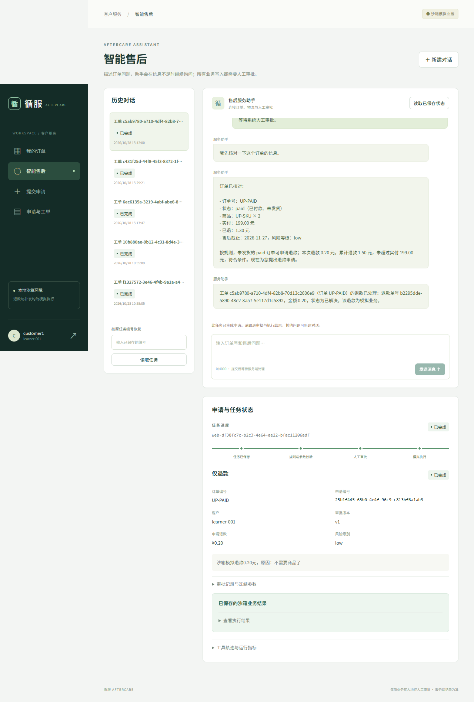
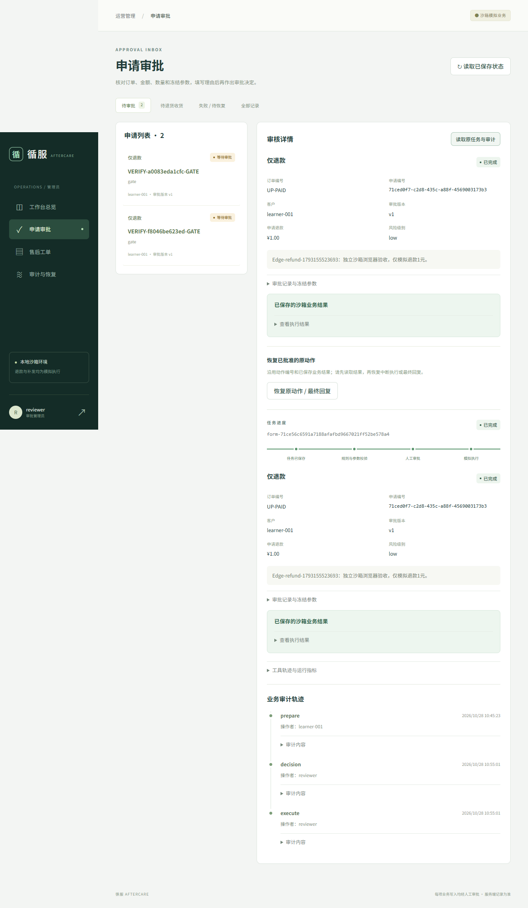

工程实践 / 可核查的项目演示
让售后需求
走完一次可信的执行。
React + TypeScript 客户与管理员双工作台，将自然语言需求连接到订单查询、人工审批、沙箱退款与退货处理。FastAPI、LangGraph、MCP 与 MySQL 共同保存可追踪的业务状态。
这是静态项目作品页。React 截图和历史视频来自实际运行；页面不提供在线对话或业务后台。
CURRENT / REACT WORKSPACE
新版 React：从客户对话到审批执行。
2026.10.28 实际运行截图。
点击原图，结合数据库与浏览器记录核查。


订单与物流、自然语言补问、历史恢复、申请与执行进度均接入真实后端。图中退款为沙箱模拟执行。
查看真实Agent与浏览器记录 ↗

真实界面提交批准/拒绝、核对冻结参数和执行状态；支持退货授权、收货后退款及失败恢复。
查看退款与退货收货记录 ↗01 / SEE IT RUN
Streamlit 历史版本：保留原始录屏。
以下是2026年10月的旧版Streamlit录屏。
新版React界面以上方真实截图和记录为准。
从申请，到人工审批与结果落库
观察客户与审批员工作台、候选动作和批准后的真实业务状态。录像中的写入发生在演示数据库，不涉及真实支付。
下载完整业务录屏点击视频原生控件播放；移动端可全屏观看。视频为已录制证据，不是当前运行的服务。
02 / HOW IT WORKS
把模型能力，放进业务约束。
用工具查询事实，用代码执行规则，
用人工审批决定是否提交业务动作。
- 01
用户消息
提交需求并绑定
已登录客户身份 - 02
模型工具查询
经 MCP 查询
订单、物流、库存 - 03
准备申请
生成候选动作
此时不写业务结果 - 04
人工审批
核对申请与版本
批准或拒绝 - 05
事务执行
校验额度与库存
幂等写入 MySQL - 06
结果回复
依据已保存结果
返回实际工单号
04 / EVIDENCE, NOT JUST A DEMO
效果有记录，边界有说明。
旧版固定48案例各3次，140/144（97.2%）仅为2026-10-21历史基线，不能当作新版React业务成功率。新版建立128个业务条件，136次结构化回归135通过，保留1项错误码断言差异；该回归没有调用大模型。
新版有限真实模型对照包含6个条件，完整B3方案4/6；另对一个已见开发条件重复3次、3/3通过。输入冲突、对照不可比项与全部失败均在报告披露，不声称完整方案提升模型准确率。
从公开记录加载版本化指标。
查看指标 JSON ↗ 旧版原始评测记录 ↗05 / SCOPE & LIMITS
演示的是工程闭环。
业务范围明确。
本项目基于现有 Agent 服务框架扩展React双端业务平台，实现面向电商售后的单 Agent工作流。LangGraph 管理状态和人工中断；独立 HTTP MCP 提供工具；FastAPI 提供接口；MySQL 保存业务状态。
所有订单、退款与补发均为模拟业务。不连接真实支付、商家订单或外部仓储。录屏展示已运行的本地系统；这个公开页面只提供媒体和文档，不托管实时模型或售后后台。
固定案例评测用于工程回归，不能代替真实线上效果、完整隐私审计或生产安全认证。测试和演示的具体覆盖范围以对应记录为准。
从源码与验证记录继续了解